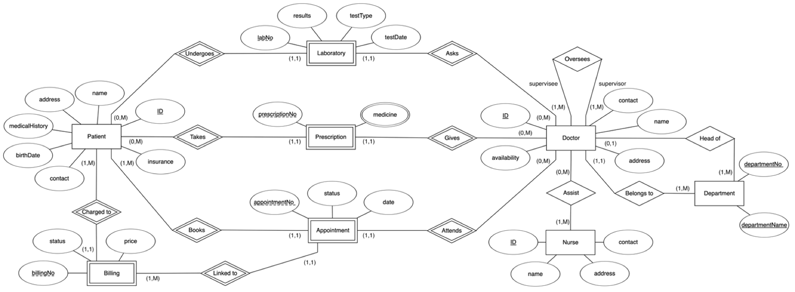

Hospital
DBMS
ProblemProblem
Bir hastanenin günlük işleyişinde verinin anlık, tutarlı ve eksiksiz olması hayatidir. Ancak veri bütünlüğü sağlanmadığında sistem hantallaşır ve hatalara yol açar.
In the daily operation of a hospital, data must be real-time, consistent, and complete. Without data integrity, the system becomes sluggish and prone to errors.
Çözüm & YaklaşımSolution & Approach
Tasarım sürecinde veritabanı şemasını sadece tabloları birbirine bağlayarak değil, iş kurallarını (business rules) da düşünerek kurguladım. Gereksiz tekrarları önleyip, ilişkisel bütünlüğü (referential integrity) sağlayan optimize edilmiş bir mimari oluşturdum.
During the design process, I structured the database schema not just by linking tables, but by considering the business rules. I created an optimized architecture that prevents redundancy and ensures referential integrity.
SonuçResult
Sonuçta ortaya hızlı yanıt veren, ölçeklenebilir ve sağlam bir yapı çıktı. Arka plandaki görünmez düzenin, ön taraftaki deneyimi nasıl tamamen değiştirdiğini görmemi sağlayan çok öğretici bir kurgu süreciydi.
The result was a fast, scalable, and robust structure. It was a highly instructive building process that showed me how the invisible order in the background completely transforms the experience on the front end.
